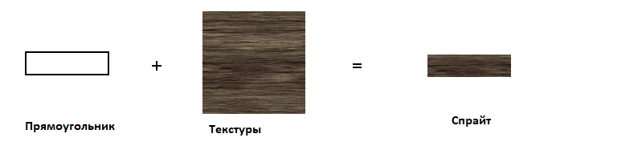
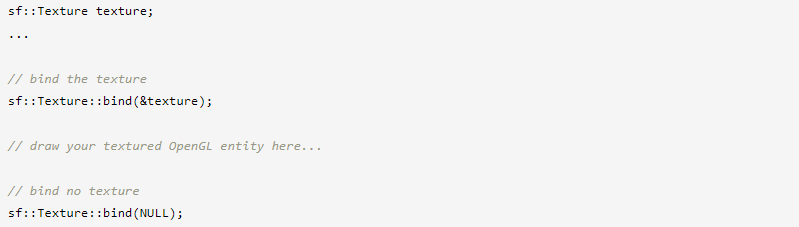

Спрайты и текстуры
Словарь
Большинство (если не все) из вас уже знакомы с этими двумя очень распространенными объектами, поэтому давайте дадим им очень краткое определение.
Текстура — это изображение. Но мы называем это «текстурой», потому что у нее очень специфическая роль: отображение на 2D-объект.
Спрайт — это не что иное, как текстурированный прямоугольник.
Хорошо, это было коротко, но если вы действительно не понимаете, что такое спрайты и текстуры, то вы найдете гораздо лучшее описание в Википедии.
Загрузка текстур
Перед созданием любого спрайта нам нужна валидная текстура. Удивительно, но класс, который инкапсулирует текстуры в SFML, называется sf::Texture. Поскольку единственной ролью текстуры является загрузка и сопоставление с графическими объектами, почти все ее функции связаны с ее загрузкой и обновлением.
Самый распространенный способ загрузки текстуры — из файла изображения на диске, который выполняется с помощью функции loadFromFile.
Иногда функция loadFromFile может дать сбой без видимой причины. Сначала проверьте сообщение об ошибке, которое SFML выводит на стандартный вывод (проверьте консоль). Если в сообщении не удается открыть файл, убедитесь, что рабочий каталог (который является каталогом, относительно которого будет интерпретироваться любой путь к файлу) является тем, что вы думаете: когда вы запускаете приложение из среды рабочего стола, рабочий каталог это исполняемая папка. Однако, когда вы запускаете свою программу из IDE (Visual Studio, Code::Blocks,...), рабочий каталог иногда может быть установлен вместо каталога проекта. Обычно это можно легко изменить в настройках проекта.
Вы также можете загрузить файл изображения из памяти (loadFromMemory), из пользовательского входного потока (loadFromStream) или из уже загруженного изображения (loadFromImage). Последний загружает текстуру из sf::Image, который является служебным классом, помогающим хранить и манипулировать данными изображения (модифицировать пиксели, создавать канал прозрачности и т. д.). Пиксели sf::Image остаются в системной памяти, что гарантирует, что операции с ними будут максимально быстрыми, в отличие от пикселей текстуры, которые находятся в видеопамяти и поэтому медленно извлекаются или обновляются, но очень быстро рисовать.
SFML поддерживает большинство распространенных форматов файлов изображений. Полный список доступен в документации по API.
Все эти функции загрузки имеют необязательный аргумент, который можно использовать, если вы хотите загрузить меньшую часть изображения.

Класс sf::IntRect — это простой служебный тип, представляющий прямоугольник. Его конструктор принимает координаты верхнего левого угла и размер прямоугольника.
Если вы не хотите загружать текстуру из изображения, а хотите обновить ее непосредственно из массива пикселей, вы можете создать ее пустой и обновить позже:
Обратите внимание, что содержимое текстуры в этот момент не определено.
Чтобы обновить пиксели существующей текстуры, вы должны использовать функцию обновления. Он имеет перегрузки для многих видов источников данных:
Во всех этих примерах предполагается, что источник имеет тот же размер, что и текстура. Если это не так, т.е. если вы хотите обновить только часть текстуры, вы можете указать координаты подпрямоугольника, который хотите обновить. Вы можете обратиться к документации для получения дополнительной информации.
Кроме того, у текстуры есть два свойства, которые изменяют способ ее отображения.
Первое свойство позволяет сгладить текстуру. Сглаживание текстуры делает границы пикселей менее заметными (но изображение становится немного более размытым), что может быть желательно при увеличении масштаба.
Поскольку сглаживание выборок из соседних пикселей в текстуре также может привести к нежелательному побочному эффекту факторизации пикселей за пределами выбранной области текстуры. Это может произойти, когда ваш спрайт расположен в нецелочисленных координатах.
Второе свойство позволяет повторять текстуру в пределах одного спрайта.
Это работает только в том случае, если ваш спрайт настроен на отображение прямоугольника, который больше текстуры, в противном случае это свойство не действует.
Хорошо, теперь я могу получить свой спрайт?
Да, теперь вы можете создать свой спрайт.
... и, наконец, нарисуйте его.

Если вы не хотите, чтобы ваш спрайт использовал всю текстуру, вы можете установить прямоугольник текстуры.
Вы также можете изменить цвет спрайта. Установленный вами цвет модулируется (умножается) на текстуру спрайта. Это также можно использовать для изменения глобальной прозрачности (альфа) спрайта.
Все эти спрайты используют одну и ту же текстуру, но имеют разный цвет:
Спрайты также можно трансформировать: у них есть положение, ориентация и масштаб.
По умолчанию источником для этих трех преобразований является верхний левый угол спрайта. Если вы хотите установить начало координат в другой точке (например, в центре спрайта или в другом углу), вы можете использовать функцию setOrigin.
Поскольку функции преобразования являются общими для всех сущностей SFML, они объясняются в отдельном руководстве: Преобразование сущностей.
Проблема белого квадрата.
Вы успешно загрузили текстуру, правильно построили спрайт, и... теперь все, что вы видите на своем экране, это белый квадрат. Что случилось?
Это распространенная ошибка. Когда вы устанавливаете текстуру спрайта, все, что он внутри делает, это сохраняет указатель на экземпляр текстуры. Поэтому, если текстура уничтожается или перемещается в другое место в памяти, спрайт оказывается с недопустимым указателем текстуры.
Эта проблема возникает, когда вы пишете такую функцию:
Вы должны правильно управлять временем жизни ваших текстур и следить за тем, чтобы они жили до тех пор, пока они используются любым спрайтом.
Важно использовать как можно меньше текстур
Использование как можно меньшего количества текстур — хорошая стратегия, и причина проста: изменение текущей текстуры — дорогостоящая операция для видеокарты. Отрисовка множества спрайтов, использующих одну и ту же текстуру, даст наилучшую производительность.
Кроме того, использование одной текстуры позволяет сгруппировать статическую геометрию в единый объект (вы можете использовать только одну текстуру для каждого вызова отрисовки), что будет намного быстрее рисовать, чем набор из множества объектов. Пакетная обработка статической геометрии включает в себя другие классы и, следовательно, выходит за рамки этого руководства. Дополнительные сведения см. в руководстве по массиву вершин.
Постарайтесь помнить об этом, когда создаете листы анимации или наборы тайлов: используйте как можно меньше текстур.
Использование sf::Texture с кодом OpenGL
Если вы используете OpenGL, а не графические объекты SFML, вы все равно можете использовать sf::Texture в качестве оболочки вокруг объекта текстуры OpenGL и использовать его вместе с остальным кодом OpenGL.
Чтобы привязать sf::Texture для рисования (в основном glBindTexture), вы вызываете статическую функцию привязки:
